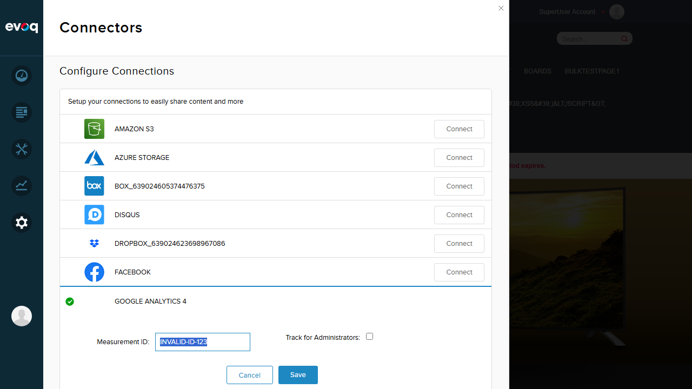
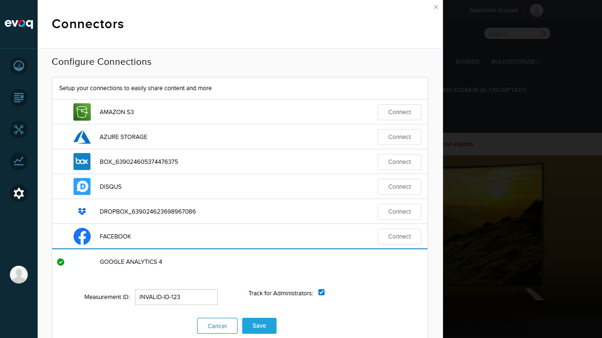
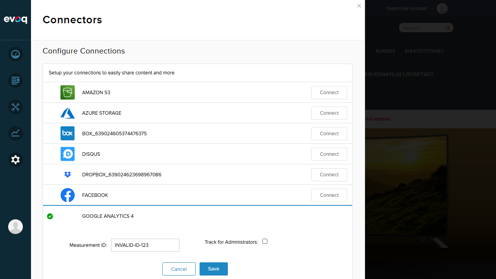
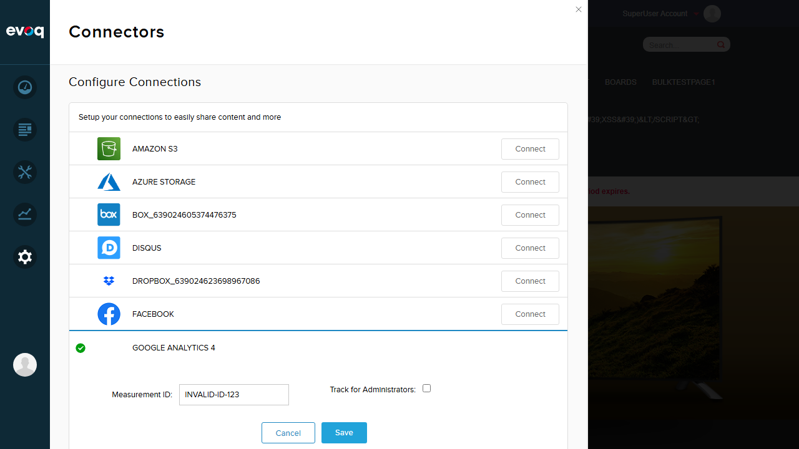

Test Report: Advanced Analytics Settings
Feature Information
| Extension | Evoq.GoogleAnalyticsConnector |
|---|
| Feature Name | Advanced Analytics Settings |
|---|
| Description | Advanced configuration options including domain name settings and admin tracking preferences with toggle functionality. |
|---|
| Feature Priority | High |
|---|
| UI Location | Admin > Settings > Connectors > Google Analytics > Advanced Settings |
|---|
| Test Date | 2026-01-06 |
|---|
Test Summary
Important Finding: The original "Google Analytics" connector with Advanced Analytics Settings (Domain Name, Segmentation Rules) is NOT installed in this test environment. Only the newer "Google Analytics 4" connector is available, which has a simplified interface without Advanced Settings.
| Planned Tests | Actual Result |
|---|
| Configure custom domain name | NOT TESTABLE - Feature not available in GA4 connector |
| Enable/disable tracking for administrators | PASS - Tested via GA4 connector |
| Toggle admin tracking switch on/off | PASS - Tested via GA4 connector |
| Save advanced settings | PASS - Settings saved successfully |
| Verify domain name validation | NOT TESTABLE - Feature not available in GA4 connector |
| Test empty domain configuration | NOT TESTABLE - Feature not available in GA4 connector |
Test Results
Test 1: Navigate to Google Analytics Connector Settings
Status: PASS
What was tested: Navigation to Settings > Connectors and locating Google Analytics configuration.
- Logged in as SuperUser
- Navigated to Settings > Connectors
- Located Google Analytics 4 connector in the list
- Clicked Edit to expand settings
Screenshot - Connectors List:

Screenshot - GA4 Settings Expanded:

Finding: Only "Google Analytics 4" connector is available. The original "Google Analytics" connector with Advanced Settings (Domain Name, Segmentation Rules) is not installed.
Test 2: Enable Tracking for Administrators
Status: PASS
What was tested: Enable the "Track for Administrators" checkbox and save settings.
- Clicked on the "Track for Administrators" checkbox to enable it
- Verified checkbox shows checked state (blue checkmark)
- Clicked Save button
- Received "Item successfully saved" confirmation message
Screenshot - Track for Administrators Enabled:
Screenshot - Save Success:

Result: The checkbox toggle works correctly and settings are saved successfully.
Test 3: Disable Tracking for Administrators
Status: PASS
What was tested: Disable the "Track for Administrators" checkbox and save settings.
- Clicked on the "Track for Administrators" checkbox to disable it
- Verified checkbox shows unchecked state
- Clicked Save button
- Received "Item successfully saved" confirmation message
Screenshot - Track for Administrators Disabled:

Screenshot - Final Save:

Result: The checkbox toggle works correctly in both directions. Settings persist after save.
Observations
Feature Availability Issue
The code repository contains a full-featured "Google Analytics" connector (Evoq.GoogleAnalyticsConnector) with the following Advanced Settings capabilities:
- Domain Name Configuration - Custom domain name field with validation (uses 'none' when empty)
- Track for Admin Toggle - Switch to enable/disable tracking for administrators
- Segmentation Rules - Full CRUD operations for rules with Label, Value, Page, and Role settings
- Advanced Settings Dialog - Accessed via "Advanced Settings" link in the connector UI
Code Evidence
The following files exist in the repository and define the Advanced Analytics Settings feature:
Evoq Content/Connectors/GoogleAnalytics/advanced.htm - Advanced settings UI templateEvoq Content/Connectors/GoogleAnalytics/Scripts/connector.js - JavaScript with advanced settings functionalityEvoq Content/Connectors/GoogleAnalytics/Components/GoogleAnalyticsConnector.cs - Backend connector component
UI Discrepancy
However, the test environment only has the "Google Analytics 4" connector available in the Connectors UI. This connector:
- Has a simplified interface with only Measurement ID and Track for Administrators options
- Does NOT have an "Advanced Settings" link
- Does NOT support Domain Name configuration
- Does NOT support Segmentation Rules
Conclusion
The original "Google Analytics" connector with full Advanced Analytics Settings functionality appears to not be installed or has been replaced/superseded by the simpler "Google Analytics 4" connector in this environment. The Track for Administrators feature IS available and works correctly in the GA4 connector.
Test Environment
| Website URL | http://localhost:8081 |
|---|
| User Account | SuperUser (host) |
|---|
| Available Connector | Google Analytics 4 (not the original Google Analytics) |
|---|
| Browser | Playwright MCP (Chromium) |
|---|